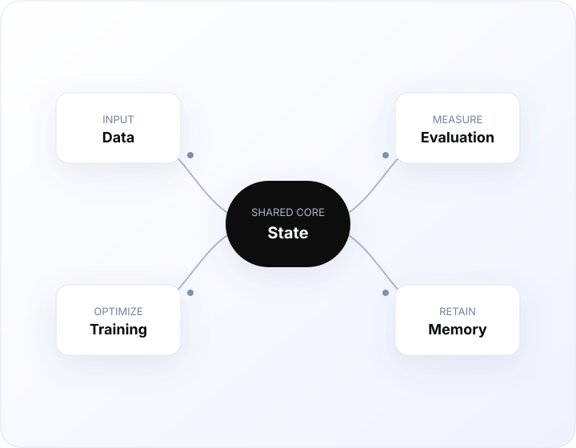

AReno
A developer-first toolkit for reinforcement-learning workflows.
Built by InclusionAI
An open system for large-scale reinforcement learning.
Explore on GitHubOpen ecosystem
A developer-first toolkit for reinforcement-learning workflows.
Scalable execution infrastructure for training and evaluation.
Reliable state and trajectory primitives for agentic systems.
Memory infrastructure for long-horizon intelligent applications.
From research to production
A cohesive stack for building, training, evaluating, and improving intelligent systems.

What is new
Follow coordinated releases across the ecosystem.
DocsPrepare a supported environment and verify the toolchain.
GuideTake a small training workflow from setup to result.
ARenoReview new capabilities, fixes, and upgrade notes.
Build in the open
Report issues, propose recipes, and help strengthen the developer experience.
AwexContribute runtime ideas and reproducible performance reports.
AStateHelp refine durable state and observability primitives.
AMemExplore memory abstractions for long-running applications.